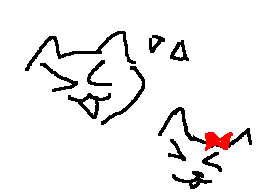
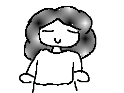
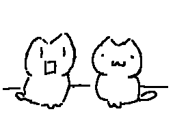

Things I love about her
Amo esa emocion que me haces sentir cada vez que vas corriendo a abrazarme despues de tiempo sin vernos
Amo que siempre me pongas nervioso y a la vez muy feliz cada que me volteas a ver <3

Amo cada vez que reimos juntos, pues para mi, tu felicidad y confort siempre será lo mas importante en mi mundooo

Amo admirar tu belleza, podria decirte que amo lo linda que eres, pero realmente, yo amo cada cosita de tiii por separado, ya q esas cositas siempre t harán unica a mis ojosss <3

Adoro cuando me intentas hacer molestar, ya que cada vez q lo haces, me haces morir de amooor

Amo buscarte en la música que te gusta, pues no hay cosa mas bonita que pensar que eso, hizo q nos unieramos <3